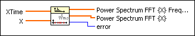
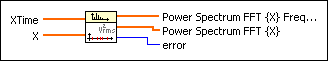
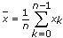
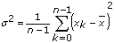
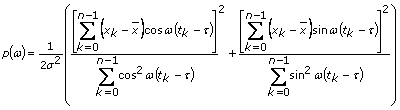
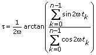
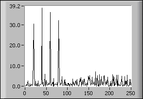

Unevenly Sampled Signal Spectrum VI
Owning Palette: Spectral Analysis VIs
Requires: Full Development System
Calculates the power spectrum of a signal that is unevenly spaced in time.

 Add to the block diagram Add to the block diagram |
 Find on the palette Find on the palette |
Owning Palette: Spectral Analysis VIs
Requires: Full Development System
Calculates the power spectrum of a signal that is unevenly spaced in time.

| Add to the block diagram |
Find on the palette |
 |
XTime is the discrete- and unevenly-spaced times. |
|
X represents the data material at times XTime. There is a one-to-one relation between XTime and X. |
 |
Power Spectrum FFT {X} Frequency are the frequency points at which the power spectrum is calculated. |
|
Power Spectrum FFT {X} is the power spectrum, in the sense of the Lomb normalized periodogram. |
 |
error returns any error or warning from the VI. You can wire error to the Error Cluster From Error Code VI to convert the error code or warning into an error cluster. |
The algorithm used is based on the Lomb normalized periodogram. Let the data Xk be given at the time points tk. In other words,
X = {x0, x1, …, xn – 1}
and
XTime = {t0, t1, …, tn – 1}.
Furthermore,

and
.
Then the Lomb normalized periodogram is defined as
,
with

The following diagram shows the Fourier transform of length 256 of a signal that has been sampled at unequal intervals of time. The signal is a combination of sine waves of frequencies 20, 40, 60, and 80 Hz. The duration of the signal is 1 sec. The sampling frequency was chosen as 256 Hz, giving the frequency resolution of 1 Hz.

Refer to the following VIs for examples of using the Unevenly Sampled Signal Spectrum VI:
 Open example Find related examples
Open example Find related examples
Open example Find related examples